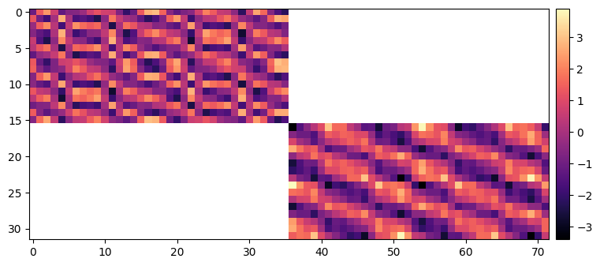

Example-34: Orbit (ORM)
[1]:
# In this example orbit response matrix is computed for ideal lattice
# Next, orbit distortion is introduced (quadrupole and sextupole transverse shifts)
# Orbit is corrected using ideal ORM (experiment to design correction)
# Next, additional gradient and skew error are introduced in quadrupoles
# With this, real ORM matrix will be off, but design ORM still can be used to correct orbit
[2]:
# Import
from pprint import pprint
import torch
from pathlib import Path
from matplotlib import pyplot as plt
from twiss import twiss
from model.library.corrector import Corrector
from model.library.line import Line
from model.command.util import chop
from model.command.util import evaluate
from model.command.util import series
from model.command.external import load_sdds
from model.command.external import load_lattice
from model.command.build import build
from model.command.wrapper import group
from model.command.orbit import orbit
from model.command.orbit import parametric_orbit
[3]:
# Load ELEGANT twiss
path = Path('ic.twiss')
parameters, columns = load_sdds(path)
nu_qx:float = parameters['nux'] % 1
nu_qy:float = parameters['nuy'] % 1
[4]:
# Build and setup lattice
# Quadrupoles are splitted into 2**2 parts, Dipoles -- 2**4 part
# Correctors are inserted between parts
path = Path('ic.lte')
data = load_lattice(path)
ring:Line = build('RING', 'ELEGANT', data)
ring.propagate = True
ring.flatten()
ring.merge()
ring.split((None, ['BPM'], None, None))
ring.roll(1)
n_q = 2**2
n_d = 2**4
for name in [name for name, kind, *_ in ring.layout() if kind == 'Quadrupole']:
corrector = Corrector(f'{name}_CXY', factor=1/(n_q - 1))
ring.split((n_q, None, [name], None), paste=[corrector])
for name in [name for name, kind, *_ in ring.layout() if kind == 'Dipole']:
corrector = Corrector(f'{name}_CXY', factor=1/(n_d - 1))
ring.split((n_d, None, [name], None), paste=[corrector])
for element in ring:
if element.__class__.__name__ == 'Dipole':
element.linear = True
ring.splice()
[5]:
# Compare linear tunes
state = torch.tensor(4*[0.0], dtype=torch.float64)
matrix = torch.func.jacrev(ring)(state)
(nuqx, nuqy), *_ = twiss(matrix)
print(nu_qx - nuqx)
print(nu_qy - nuqy)
tensor(1.4433e-15, dtype=torch.float64)
tensor(-9.9920e-16, dtype=torch.float64)
[6]:
# Compute closed orbit
fp = 1.0E-3*torch.randn(4, dtype=torch.float64)
fp, *_ = orbit(ring, fp, [], alignment=False, limit=8, epsilon=1.0E-12)
# Chop small values
fp = [fp]
chop(fp)
fp, *_ = fp
print(fp)
tensor([0., 0., 0., 0.], dtype=torch.float64)
[7]:
# Compute parametric closed orbit (1st order derivatives wrt cx and cy at each monitor location)
n_kick = ring.describe['Corrector']
cx = torch.tensor(n_kick*[0.0], dtype=torch.float64)
cy = torch.tensor(n_kick*[0.0], dtype=torch.float64)
pox, *_ = parametric_orbit(ring,
fp,
[cx],
(1, 'cx', ['Corrector'], None, None),
alignment=False,
advance=True,
full=False)
poy, *_ = parametric_orbit(ring,
fp,
[cy],
(1, 'cy', ['Corrector'], None, None),
alignment=False,
advance=True,
full=False)
chop(pox)
chop(poy)
[8]:
# Compute orbit response matrix
# [qx_1, qx_2, ..., qx_n, qy_1, qy_2, ..., qy_n] = M @ [cx_1, cx_2, ..., cx_k, cy_1, cy_2, ..., cy_k]
# qx_i/qy_i -- qx/qy orbit at BPM i
# cx_i/cy_i -- cx/cy angle at corrector i
def qxqy(cxy, pox, poy):
cx, cy = cxy.reshape(1 + 1, -1)
qx, _, qy, _ = torch.stack([evaluate(tx, [fp, cx]) + evaluate(ty, [fp, cy]) for tx, ty in zip(pox, poy)]).T
return torch.cat([qx, qy])
cx = torch.tensor(n_kick*[0.0], dtype=torch.float64)
cy = torch.tensor(n_kick*[0.0], dtype=torch.float64)
cxy = torch.cat([cx, cy])
orm = torch.func.jacrev(qxqy)(cxy, pox, poy)
print(cxy.shape)
print(qxqy(cxy, pox, poy).shape)
print(orm.shape)
data = orm.clone()
data[data==0.0] = torch.nan
plt.figure(figsize=(34/4, 72/4))
img = plt.imshow(data.cpu().numpy(), cmap='magma', interpolation='nearest')
cax = plt.gcf().add_axes([plt.gca().get_position().x1 + 0.01, plt.gca().get_position().y0, 0.02, plt.gca().get_position().height])
plt.colorbar(img, cax=cax)
plt.show()
torch.Size([72])
torch.Size([32])
torch.Size([32, 72])

[9]:
# Set corrector errors
cx = 50.0E-6*torch.randn_like(cx)
cy = 50.0E-6*torch.randn_like(cy)
# Find closed orbit with errors
points, *_ = orbit(ring, fp, [cx, cy], ('cx', ['Corrector'], None, None), ('cy', ['Corrector'], None, None), alignment=False, advance=True, full=False, limit=16, epsilon=1.0E-12)
# Set wrapper
start, *_, end = ring.names
mapping, *_ = group(ring, start, end, ('cx', ['Corrector'], None, None), ('cy', ['Corrector'], None, None), alignment=False)
# Propagate estimated closed orbit
point, *_ = points
print(point)
print(mapping(point, cx, cy))
print(torch.allclose(point, mapping(point, cx, cy), rtol=1.0E-12, atol=1.0E-12))
print()
# Set orbit
qx, _, qy, _ = points.T
# Compute orbit from known errors
Qx, Qy = (orm @ torch.cat([cx, cy])).reshape(1 + 1, -1)
# qx vs Qx
plt.figure(figsize=(16, 2))
plt.errorbar(ring.locations().cpu().numpy(), qx.cpu().numpy(), fmt='-', color='blue', marker='o', ms=8, alpha=0.75)
plt.errorbar(ring.locations().cpu().numpy(), Qx.cpu().numpy(), fmt=' ', color='black', marker='x', ms=8, alpha=1)
plt.xticks(ticks=ring.locations(), labels=dict.fromkeys([name for name, kind, *_ in ring.layout() if kind == 'BPM']))
plt.tight_layout()
plt.show()
# qy vs Qy
plt.figure(figsize=(16, 2))
plt.errorbar(ring.locations().cpu().numpy(), qy.cpu().numpy(), fmt='-', color='blue', marker='o', ms=8, alpha=0.75)
plt.errorbar(ring.locations().cpu().numpy(), Qy.cpu().numpy(), fmt=' ', color='black', marker='x', ms=8, alpha=1)
plt.xticks(ticks=ring.locations(), labels=dict.fromkeys([name for name, kind, *_ in ring.layout() if kind == 'BPM']))
plt.tight_layout()
plt.show()
tensor([-0.0003, 0.0004, 0.0007, 0.0013], dtype=torch.float64)
tensor([-0.0003, 0.0004, 0.0007, 0.0013], dtype=torch.float64)
True
[10]:
# Perform one correction step (use measured orbit and model matrix)
dcx, dcy = - (torch.linalg.pinv(orm) @ torch.cat([qx, qy])).reshape(1 + 1, -1)
# Find closed orbit with errors and add corrections
points, *_ = orbit(ring, fp, [cx + dcx, cy + dcy], ('cx', ['Corrector'], None, None), ('cy', ['Corrector'], None, None), alignment=False, advance=True, full=False, limit=16, epsilon=1.0E-12)
# Set orbit
dqx, _, dqy, _ = points.T
# qx vs dqx
plt.figure(figsize=(16, 2))
plt.errorbar(ring.locations().cpu().numpy(), qx.cpu().numpy(), fmt='-', color='blue', marker='o', ms=8, alpha=0.75)
plt.errorbar(ring.locations().cpu().numpy(), dqx.cpu().numpy(), fmt='-', color='red', marker='o', ms=8, alpha=1)
plt.xticks(ticks=ring.locations(), labels=dict.fromkeys([name for name, kind, *_ in ring.layout() if kind == 'BPM']))
plt.tight_layout()
plt.show()
# qy vs dqy
plt.figure(figsize=(16, 2))
plt.errorbar(ring.locations().cpu().numpy(), qy.cpu().numpy(), fmt='-', color='blue', marker='o', ms=8, alpha=0.75)
plt.errorbar(ring.locations().cpu().numpy(), dqy.cpu().numpy(), fmt='-', color='red', marker='o', ms=8, alpha=1)
plt.xticks(ticks=ring.locations(), labels=dict.fromkeys([name for name, kind, *_ in ring.layout() if kind == 'BPM']))
plt.tight_layout()
plt.show()
[11]:
# Correction lool (use measured orbit and model matrix)
# Given measured orbit values qx and qy (differences with reference orbit)
# New corrector settings are computed and applied
# Orbit is remeasured and procedure is repeated
cx = 50.0E-6*torch.randn_like(cx)
cy = 50.0E-6*torch.randn_like(cy)
for _ in range(16):
points, *_ = orbit(ring, fp, [cx, cy], ('cx', ['Corrector'], None, None), ('cy', ['Corrector'], None, None), alignment=False, advance=True, full=False, limit=16, epsilon=1.0E-12)
qx, _, qy, _ = points.T
dcx, dcy = - 0.5*(torch.linalg.pinv(orm) @ torch.cat([qx, qy])).reshape(1 + 1, -1)
cx += dcx
cy += dcy
print(torch.cat([qx, qy]).norm())
tensor(0.0019, dtype=torch.float64)
tensor(0.0009, dtype=torch.float64)
tensor(0.0005, dtype=torch.float64)
tensor(0.0002, dtype=torch.float64)
tensor(0.0001, dtype=torch.float64)
tensor(5.6358e-05, dtype=torch.float64)
tensor(2.8163e-05, dtype=torch.float64)
tensor(1.4078e-05, dtype=torch.float64)
tensor(7.0379e-06, dtype=torch.float64)
tensor(3.5187e-06, dtype=torch.float64)
tensor(1.7593e-06, dtype=torch.float64)
tensor(8.7964e-07, dtype=torch.float64)
tensor(4.3982e-07, dtype=torch.float64)
tensor(2.1991e-07, dtype=torch.float64)
tensor(1.0996e-07, dtype=torch.float64)
tensor(5.4978e-08, dtype=torch.float64)
[12]:
# In the above, errors were passed as deviaton variables
# Another option is to add errors to the main attributes
# Generate lattice with errors (errors are added to the main attributes)
error:Line = ring.clone()
cx = 50.0E-6*torch.randn_like(cx)
cy = 50.0E-6*torch.randn_like(cx)
index = 0
label = ''
for line in error.sequence:
for element in line:
if element.__class__.__name__ == 'Corrector':
if label != element.name:
index +=1
label = element.name
element.cx = cx[index - 1].item()
element.cy = cy[index - 1].item()
# Perform correction
cx = torch.zeros_like(cx)
cy = torch.zeros_like(cx)
for _ in range(16):
points, *_ = orbit(error, fp, [cx, cy], ('cx', ['Corrector'], None, None), ('cy', ['Corrector'], None, None), alignment=False, advance=True, full=False, limit=16, epsilon=1.0E-12)
qx, _, qy, _ = points.T
dcx, dcy = - 0.5*(torch.linalg.pinv(orm) @ torch.cat([qx, qy])).reshape(1 + 1, -1)
cx += dcx
cy += dcy
print(torch.cat([qx, qy]).norm())
tensor(0.0013, dtype=torch.float64)
tensor(0.0006, dtype=torch.float64)
tensor(0.0003, dtype=torch.float64)
tensor(0.0002, dtype=torch.float64)
tensor(7.8633e-05, dtype=torch.float64)
tensor(3.9300e-05, dtype=torch.float64)
tensor(1.9644e-05, dtype=torch.float64)
tensor(9.8195e-06, dtype=torch.float64)
tensor(4.9086e-06, dtype=torch.float64)
tensor(2.4538e-06, dtype=torch.float64)
tensor(1.2266e-06, dtype=torch.float64)
tensor(6.1319e-07, dtype=torch.float64)
tensor(3.0653e-07, dtype=torch.float64)
tensor(1.5324e-07, dtype=torch.float64)
tensor(7.6602e-08, dtype=torch.float64)
tensor(3.8294e-08, dtype=torch.float64)
[13]:
# Add alignment and focusing errors to quadrupoles
# Note, adding the same alignmet elemets to parts is not valid for all types of alignmet errors
error:Line = ring.clone()
n_quad = error.describe['Quadrupole']
dx = 100.0E-6*torch.randn(n_quad, dtype=torch.float64)
dy = 100.0E-6*torch.randn(n_quad, dtype=torch.float64)
kn = 0.1*torch.randn(n_quad, dtype=torch.float64)
ks = 0.1*torch.randn(n_quad, dtype=torch.float64)
index = 0
label = ''
for line in error.sequence:
for element in line:
if element.__class__.__name__ == 'Quadrupole':
if label != element.name:
index +=1
label = element.name
element.dx = dx[index - 1].item()
element.dy = dy[index - 1].item()
element.kn = (element.kn + kn[index - 1]).item()
element.ks = (element.ks + ks[index - 1]).item()
# Compute closed orbit with zero corrector
# Note, alignment is on
cx = torch.zeros_like(cx)
cy = torch.zeros_like(cx)
points, *_ = orbit(error, fp, [cx, cy], ('cx', ['Corrector'], None, None), ('cy', ['Corrector'], None, None), alignment=True, advance=True, full=False, limit=16, epsilon=1.0E-12)
# Test closed orbit
point, *_ = points
print(point)
print(error(point, alignment=True))
print(torch.allclose(point, error(point, alignment=True), rtol=1.0E-12, atol=1.0E-12))
print()
# Plot orbit
qx_initial, _, qy_initial, _ = points.T
plt.figure(figsize=(16, 2))
plt.errorbar(ring.locations().cpu().numpy(), qx_initial.cpu().numpy(), fmt='-', color='blue', marker='o', ms=8, alpha=0.75)
plt.xticks(ticks=ring.locations(), labels=dict.fromkeys([name for name, kind, *_ in ring.layout() if kind == 'BPM']))
plt.tight_layout()
plt.show()
plt.figure(figsize=(16, 2))
plt.errorbar(ring.locations().cpu().numpy(), qy_initial.cpu().numpy(), fmt='-', color='blue', marker='o', ms=8, alpha=0.75)
plt.xticks(ticks=ring.locations(), labels=dict.fromkeys([name for name, kind, *_ in ring.layout() if kind == 'BPM']))
plt.tight_layout()
plt.show()
tensor([ 0.0007, -0.0005, -0.0005, -0.0012], dtype=torch.float64)
tensor([ 0.0007, -0.0005, -0.0005, -0.0012], dtype=torch.float64)
True
[14]:
# Compure ORM for model with errors (measured ORM)
n_kick = ring.describe['Corrector']
cx = torch.tensor(n_kick*[0.0], dtype=torch.float64)
cy = torch.tensor(n_kick*[0.0], dtype=torch.float64)
pox, *_ = parametric_orbit(error,
fp,
[cx],
(1, 'cx', ['Corrector'], None, None),
alignment=False,
advance=True,
full=False)
poy, *_ = parametric_orbit(error,
fp,
[cy],
(1, 'cy', ['Corrector'], None, None),
alignment=False,
advance=True,
full=False)
chop(pox)
chop(poy)
cx = torch.tensor(n_kick*[0.0], dtype=torch.float64)
cy = torch.tensor(n_kick*[0.0], dtype=torch.float64)
cxy = torch.cat([cx, cy])
orm_error = torch.func.jacrev(qxqy)(cxy, pox, poy)
data = orm.clone()
data[data==0.0] = torch.nan
plt.figure(figsize=(34/4, 72/4))
img = plt.imshow(data.cpu().numpy(), cmap='magma', interpolation='nearest')
cax = plt.gcf().add_axes([plt.gca().get_position().x1 + 0.01, plt.gca().get_position().y0, 0.02, plt.gca().get_position().height])
plt.colorbar(img, cax=cax)
plt.show()
data = orm_error.clone()
data[data==0.0] = torch.nan
plt.figure(figsize=(34/4, 72/4))
img = plt.imshow(data.cpu().numpy(), cmap='magma', interpolation='nearest')
cax = plt.gcf().add_axes([plt.gca().get_position().x1 + 0.01, plt.gca().get_position().y0, 0.02, plt.gca().get_position().height])
plt.colorbar(img, cax=cax)
plt.show()

[15]:
# Find corrector settings to minimize orbit distortion (model ORM)
cx = torch.zeros_like(cx)
cy = torch.zeros_like(cx)
for _ in range(4):
points, *_ = orbit(error, fp, [cx, cy], ('cx', ['Corrector'], None, None), ('cy', ['Corrector'], None, None), alignment=True, advance=True, full=False, limit=16, epsilon=1.0E-12)
qx, _, qy, _ = points.T
dcx, dcy = - 0.75*(torch.linalg.pinv(orm) @ torch.cat([qx, qy])).reshape(1 + 1, -1)
cx += dcx
cy += dcy
print(torch.cat([qx, qy]).norm())
qx_model = qx.clone()
qy_model = qy.clone()
tensor(0.0064, dtype=torch.float64)
tensor(0.0020, dtype=torch.float64)
tensor(0.0006, dtype=torch.float64)
tensor(0.0002, dtype=torch.float64)
[16]:
# Find corrector settings to minimize orbit distortion (measured ORM)
cx = torch.zeros_like(cx)
cy = torch.zeros_like(cx)
for _ in range(4):
points, *_ = orbit(error, fp, [cx, cy], ('cx', ['Corrector'], None, None), ('cy', ['Corrector'], None, None), alignment=True, advance=True, full=False, limit=16, epsilon=1.0E-12)
qx, _, qy, _ = points.T
dcx, dcy = - 0.75*(torch.linalg.pinv(orm_error) @ torch.cat([qx, qy])).reshape(1 + 1, -1)
cx += dcx
cy += dcy
print(torch.cat([qx, qy]).norm())
qx_error = qx.clone()
qy_error = qy.clone()
tensor(0.0064, dtype=torch.float64)
tensor(0.0019, dtype=torch.float64)
tensor(0.0005, dtype=torch.float64)
tensor(0.0001, dtype=torch.float64)
[17]:
# Compare orbits after correction
# qx
plt.figure(figsize=(16, 2))
plt.errorbar(ring.locations().cpu().numpy(), qx_initial.cpu().numpy(), fmt='-', color='black', marker='o', ms=8, alpha=0.75)
plt.errorbar(ring.locations().cpu().numpy(), qx_model.cpu().numpy(), fmt='-', color='blue', marker='o', ms=8, alpha=0.75)
plt.errorbar(ring.locations().cpu().numpy(), qx_error.cpu().numpy(), fmt='-', color='red', marker='o', ms=8, alpha=0.75)
plt.xticks(ticks=ring.locations(), labels=dict.fromkeys([name for name, kind, *_ in ring.layout() if kind == 'BPM']))
plt.tight_layout()
plt.show()
# qy
plt.figure(figsize=(16, 2))
plt.errorbar(ring.locations().cpu().numpy(), qy_initial.cpu().numpy(), fmt='-', color='black', marker='o', ms=8, alpha=0.75)
plt.errorbar(ring.locations().cpu().numpy(), qy_model.cpu().numpy(), fmt='-', color='blue', marker='o', ms=8, alpha=0.75)
plt.errorbar(ring.locations().cpu().numpy(), qy_error.cpu().numpy(), fmt='-', color='red', marker='o', ms=8, alpha=0.75)
plt.xticks(ticks=ring.locations(), labels=dict.fromkeys([name for name, kind, *_ in ring.layout() if kind == 'BPM']))
plt.tight_layout()
plt.show()